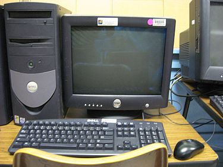

Webbsidan om datorer
Webbsidan om datorer
Stationär dator
Bild: En stationär dator med olika tillbehör, en datormus, ett tangentbord, en skärm (CRT-skärm, eller tjockskärm). Datorn är till vänster om datorskärmen.
En stationär dator, även kallad skrivbordsdator, engelska desktop computer, är en persondator som är anpassad för att stå på ett skrivbord eller datorbord. De är inte avsedda att flyttas, och är alltså en typ av stationära datorer.
För att en stationär dator ska kunna användas så behöver den strömförsörjas med ström, med en elkabel. Om strömmen skulle gå medan man använder datorn så stängs den av. Det går att anända en UPS till datorn så den inte stängs av när strömmen går.
Vad en stationär dator ser ut
Typer av stationära datorer
Standard
En vanlig skrivbordsdator, "tornet", består av en stor rektangulär låda som håller alla komponenter, hårdisken, CD/DVD-läsare/brännare, och alla andra komponenter. Denna typ av stationär dator är mest lämplig för att surfa på Internet, betala räkningar, Word, spela enklare spel, och Youtube/film-tittande. De kostar ca 6000-10000 kr. Till skillnad från bärbara datorer håller stationära datorer längre eftersom man kan uppgradera (de flesta) komponenter utan att skada datorn. Billigare stationära datorer har ofta mindre hårddisk, svagare processor, och mindre RAM-minne.
Man kan bygga en stationär dator själv eller köpa en färdig. Färdiga datorer kanske inte går att uppgradera i framtiden. Datorer som man har byggt själv går att uppgradera.
Gaming
Gamingdatorer har ofta starkare processorer, mycket RAM, kraftiga grafikkort, och större hårddiskar. De är mer kraftigare än vanliga stationära datorer eftersom spel som man spelar ofta kräver mycket RAM, bra processor, bra grafikkort, och flera GB på hårddisken.
En stationär gamingdator som kostar ca 6 000 kr - 10 000kr för en som klarar många spel. De klarar ofta inte de mest krävande spelen eftersom de inte har de bästa grafikkorten.
En dator som kostar ca 11 000kr-19 000kr klarar de flesta spelen utan problem. De har oftast inte allra bästa komponenter, tex. marknadens bästa grafikkort.
En gamingdator som kostar 20 000kr - 35 000kr har de bästa komponenterna. Dessa datorer klarar av att köra de mest krävande spelen på maxinställningar utan lagg. Dessa datorer är också framtidssäker och behöver uppgraderas allt färre gånger.
Allt-i-ett (även kallad 2-i-1)
En allt-i-ett dator levereras en hel dator i ett enda paket. Hela datorn är inbyggd i skärmen. Oftast ingår mus och tangentbord, och därför kallas denna typ av dator för allt-i-ett. Ett exempel på en allt-i-ett dator är Apples iMac, där själva datorn är inbyggd i skärmen, men mus och tangentbord medföljder.
Fördelar med allt-i-ett datorer
- Hela datorn är inbyggd i skärmen - man slipper köpa skärm till.
- Oftast ingår mus och tangentbord så man slipper köpa det till datorn
Nackdelar med allt-i-ett datorer
- Mindre möjligheter att uppgradera
- Om du vill byta dator så måste du också byta skärm